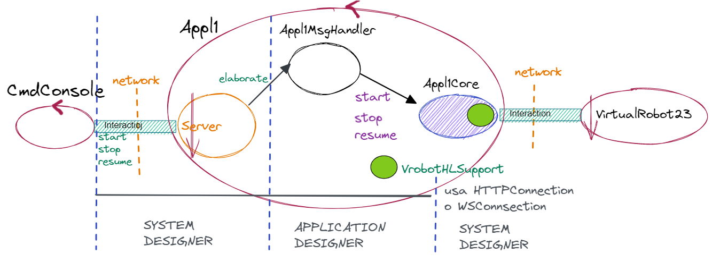

Introduzione
Nello Sprint 2:
- Il robot doveva gestire i comandi stop/resume mentre percorreva il perimetro della stanza
- la logica applicativa riceveva comandi in locale dalla CmdConsole
Architettura logica sprint 2:

Requisiti
In questa nuova fase dello sviluppo, dobbiamo superare le limitazioni che ci siamo imposti in precedenza, pertanto la CmdConsole deve diventare remota.
Il sistema che ne consegue, è pertanto un sistema distribuito.
Analisi dei Requisiti
In particolare, detto P uno dei protocolli definiti in ProtocolType:
- L’applicazione Appl1 come un ente attivo (actor): capace di ricevere messaggi (comandi start/stop/resume) via P (protocol-indipendent)e interpretarli come comandi a Appl1(e quindi a VirtualRobot23).
- CmdConsole deve diventare un actor che interagisce con un utente umano e che invia comandi ad Appl1 usando il protocollo P.
Analisi del Problema
Analisi delle problematiche che sorgono dai requisiti forniti.- La cmdConsole deve diventare remota quindi dobbiamo introdurre un supporto alla comunicazione:
Noi abbiamo già un protocollo di comunicazione tra cmdConsole e Appl1 dallo Sprint2, ma non possiamo riutilizzarlo perché il requisiti specifica che il progetto sia protocol-indipendent: occorre quindi introdurre un nuovo supporto alla comunicazione - La console deve essere cofnigurata da un configuratore o da un pattern factory tramite un file di configurazione; Console e Appl1 dovranno essere configurati in modo concorde. Come possiamo individuare dinamicamente un attore, ora che non lavoro più in locale?
CmdConsole
Appl1 e Robot con WS
Come facciamo? La connessione è l’ente astratto e poi ci saranno enti concreti che incarnano i protocolli di comunicazione.
- HttpConnection cosa fa?
Implementa tutti questi metodi attraverso una funzione di comodo che si chiama sendHTTP (stringa json)
sfruttando un supporto http ( per ora usiamo Apache)
Siccome sendHttp mi retituisce delle stringhe:
grazie al sincronismo tipico di questo protocollo, su HTTP ho sempre req e resp.
In caso di una forward (fire & forget) la risposta viene ignorata!
- WsConnection, invece?
WSConnection, è figlia di un meccanismo asincrono, pertanto non è possibile garantire un messaggio di risposta.
Quindi, se io faccio una forward, non posso sapere se è andata a buon fine o no!
Come posso risolvere questo problema?
Possibile risposta:
WsConnection viene vista anche come IObservable perché io devo fare in modo che, se gli arriva un messaggio, questo emerga a livello applicativo.
Essendo osservabile, potrò associarle uno o più Observer: in questo modo, quando un messaggio viene inviato dal Server Al client, grazie all'Observer, siamo in grado di catturarlo e gestirlo.
Tutti i messaggi di stato, ovvero gli esiti delle operazioni:
- E' andato tutto a buon fine?
- C’è stata una collisione?
- Potrebbero esserci anche informazioni non sollecitate che arrivano spontaneamente:
- se il robot passa sotto al Sonar, sulla Connection arrivano le informazioni sulla distanza rilevata!
Saranno necessari metodi per aggiungere e togliere degli Observer.
Perché non definisco anche HTTPConnection come Observer?
Possibile risposta:
Perché in HTTP ricevo sempre una risposta: quello che andrei ad osservare è la risposta che passa.Architettura logica proposta alla fine dell’analisi:
Piano di Lavoro
Occorre implementare due componenti:
- il componente che abilita la comunicazione lato server
- quello che permetta di eseguire le chiamate lato client.
Lato CmdConsole:
- Refactoring della classe Appl1Sprint2CmdConsole al fine di rendere la console remota
- Configuratore (legge il file di configurazione e fa il setup)
- Mantengo invariata l'interfaccia grafica della console già sviluppata.
Lato Appl1:
- Lasciamo intatto il componente Appl1Core: esso è un componente già testato e funzionante.
- Configuratore (legge il file di configurazione e fa il setup)
- L'application designer dovrà scrivere Appl1MessageHandler, al fine di iniettare nel server "il collante" .
- Realizzare le classi concrete in gradi di rappresentare i diversi protocolli di comunicazione
- Implementare VrobotHLMovesInteractionAsynch per il protocollo WS, con opportuna estensione degli Observer.
Tempo Previsto:
Lo sviluppo lato Appl1 può essere fatto parallelamente allo sviluppo di CmdConsole, con la premura di agire in modo consistente per le scelte da intraprendere.
Test plans
Come pianifico il test (da leggere guida per test plans e test)Project
Testing
Deployment
Il deployment con Docker è un processo che implica la distribuzione di un'applicazione in un ambiente di produzione utilizzando la tecnologia di containerizzazione Docker.
Il processo di deployment con Docker segue il seguente flusso:
- Creazione dell'immagine Docker dell'applicazione
- Push dell'immagine su un registro Docker
- Esecuzione dell'immagine in un container sul server di produzione
Vantaggi del delployment con Docker:
- Creare un ambiente riproducibile e portabile per l'esecuzione di un'applicazione, indipendentemente dal sistema operativo e dall'hardware sottostante.
- Automatizza il processo di deployment
Maintenance
By Anna Vandi email: anna.vandi@studio.unibo.it,
GIT repo: https://github.com/AnnaVandi/issLab23